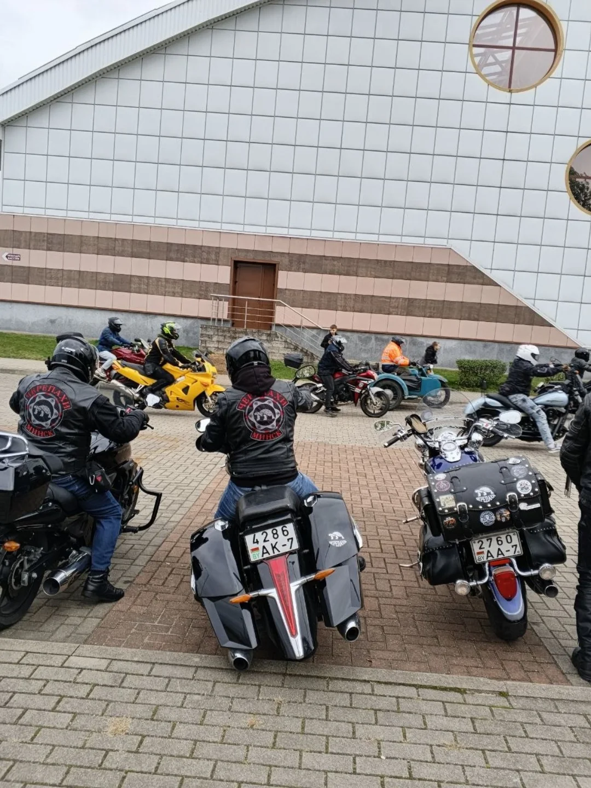

Мотоклуб · Минск
Черепахи MCC
Сначала семья, потом работа, потом клуб. Даже когда мы дома с близкими или на смене, часть каждого из нас всегда в клубе.
Мы собрались в Минске 26 ноября 2023 года. Тогда нас объединили малокубатурные мотоциклы. Любовь к неспешной езде осталась. С нами можно спокойно сказать, что пора сделать остановку или что в этот раз едешь только до первого привала.
Что значит быть своим ↓
Что значит быть своим
На работе у нас разные должности, а за общим столом каждый вправе высказаться. О разногласиях говорим прямо и спокойно. Политические и религиозные споры оставляем за пределами клуба.
На что можно рассчитывать
Если у товарища в дороге заглох мотор, останавливаемся. Кто-то достанет инструмент, кто-то поможет найти эвакуатор. Точно так же подойдём к незнакомому мотоциклисту на обочине и спросим, нужна ли помощь.
Бывает, что помощь нужна уже дома. В трудный момент поддерживаем своих делом, а когда нужно и есть возможность — деньгами.
Что берёшь на себя
Клуб требует времени. Есть обязательные встречи, членские взносы и работа по клубному дому. Всё это мы делаем сами.
Держим слово даже в мелочах. Если пообещал привезти инструмент и тебя задержали на работе, предупреди заранее. У товарищей ещё будет время взять свой.
Как мы принимаем решения
Предложить маршрут или поднять вопрос может каждый участник. Право голоса на собрании у полноправных членов клуба. Они выбирают Совет, который возглавляет президент. Важные вопросы и споры разбираем на Совете.
Кто за что отвечает
- Президент
- Руководит клубом, ведёт заседания Совета и представляет «Черепах» при встречах с другими клубами.
- Вице-президент
- Занимается делами клубного дома, знакомится с кандидатами и замещает президента в его отсутствие.
- Дорожный капитан
- Планирует маршрут и остановки, выбирает темп и порядок движения колонны.
- Сержант по безопасности
- Следит за порядком на встречах и в лагере, организует дежурства.
- Секретарь
- Сообщает о сборах и записывает решения, чтобы все знали, о чём договорились.
- Казначей
- Ведёт общую кассу и отчитывается перед клубом за расходы.
Какие бывают мотоклубы
«Черепахи» — MCC. На мотовстречах мы знакомимся и с традиционными MC, и с фри-группами. Буквы в названии дают подсказку, но у каждого объединения свои порядки. Вот как обычно устроена жизнь в разных клубах.
- MCC Наш формат мотоклуба
- Motor Cycle ClubВместе ездят, встречаются, занимаются делами клуба. Сколько ответственности берёт на себя участник, зависит от конкретного MCC. У «Черепах» есть выборные должности, общие взносы и время на знакомство перед вступлением.
- MC Традиционный мотоклуб
- Motorcycle ClubВажны иерархия, клубные «цвета» и участие в жизни братства. Прежде чем получить полный комплект нашивок, новичок обычно проводит время рядом с клубом и проходит кандидатский срок.
- FG Фри-группа
- Free GroupСвободные мотоциклисты договариваются о выездах между собой, часто обходятся без должностей и взносов. У группы могут быть свои «цвета», как у гродненских Nashorn Free Riders.
- RC Клуб совместных поездок
- Riding ClubСюда приходят за попутчиками. В календаре выбираешь подходящий маршрут и приезжаешь к месту сбора. В Southern Cruisers, например, можно присоединиться на мотоцикле любой марки.
- MG Мотогруппа
- Moto GroupШирокое название компании, которую может объединять один город или общее увлечение. У немецкой MG Mandern, например, есть ежемесячная встреча за общим столом. Туда можно заглянуть познакомиться.
- OC / OG Клуб владельцев
- Owners Club / Owners GroupВладельцев собирает марка мотоцикла, как в Harley Owners Group, а иногда и одна модель. Легко найти человека, который ездит на такой же машине и знает, какой кофр встанет без переделок.

Наши в дороге
На общем снимке нас узнают по жилетам. На дороге о «Черепахах» судят по поступкам каждого, даже когда он едет один.
Поездки из Минска
Четыре идеи для выходных. Перед выездом договариваемся об остановках и о том, кому когда нужно быть дома. В колонне соблюдаем правила дорожного движения и держим темп, который задаёт дорожный капитан.
1 деньМир и Несвиж
Круг из Минска через Мир и Несвиж. У замка можно размять ноги, в Несвиже сесть за общий стол и к вечеру вернуться домой.
Подготовить вопрос о поездке2 дняБерега Нарочи
Через Мядель к Нарочи, обратно через Вилейку. С ночёвкой у озера останется целый вечер на разговоры, которые в шлеме на ходу не услышишь.
Подготовить вопрос о поездке2 дняБраславские озёра
Через Глубокое до Браслава. На следующий день можно свернуть на малые дороги между озёрами. Где сделать привал и сколько успеем до обратной дороги, обсудим вместе.
Подготовить вопрос о поездке1 деньНалибокская пуща
Через Ивенец к лесу и обратно засветло. Хороший повод взять термос и познакомиться на коротком выезде, когда на все выходные уехать трудно.
Подготовить вопрос о поездкеКак познакомиться
Увидишь на мотовстрече жилет с нашей черепахой — подойди познакомиться. Расскажи, на чём ездишь и куда любишь выбираться из города.
Сначала мы зовём человека в поездку гостем. Если захочешь вступить в клуб, впереди кандидатский срок — не меньше одного мотосезона. За это время мы узнаём друг друга в дороге и в общих делах.